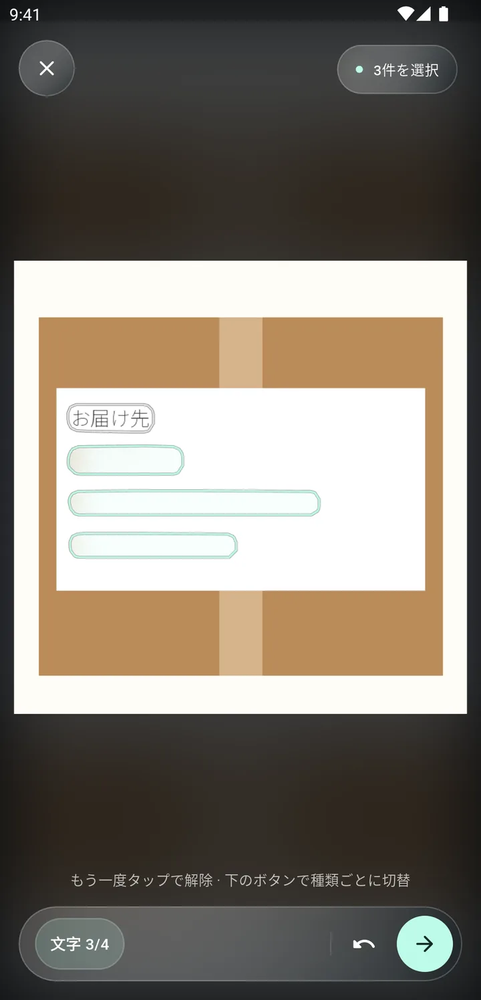

Android ベータ版、公開中
その一枚、 見せたいものだけ。
写り込んだ顔や文字を自動で見つけて、
タップするだけで隠せます。
写真の処理は端末内。アカウント登録も不要。

写り込みには、ひと工夫。
camereon の実際の操作画面
HOW TO USE
撮って、隠して。
あとは、あなたらしく。
写真を選んでから、保存するまでの4ステップ。
-
01
写真を用意する
カメラで撮影、または写真を選択。サンプルからも試せます。
-
02
自動で見つける
顔・人・文字・画面・車を検出。見つかった候補を枠で表示します。
-
03
隠すところを選ぶ
気になる枠をタップ。選んだところは、まわりの色で自然に隠します。
-
04
確認して、保存する
隠し忘れがないか確認して、写真に保存。共有する前に、ひと安心。
実機で撮影した操作例です。検出には見落としがあるため、保存前に確認してください。
写真は、端末の中だけで。
見つけるのも隠すのも、すべて端末の中。
写真を送信せず、アカウント登録もいりません。
よくある質問
何を隠せますか？
顔・人・文字・画面・車を自動で見つけます。枠をタップするか、長押しでなぞって選びます。見落としもあるので、保存前に確認してください。
iPhone でも使えますか？
iPhone 版はまだ配布していません。いまは Android のベータ版だけです。
インストールで警告が出ました。
Google Play ではなく GitHub から配布しているため、確認やスキャンを求められることがあります。有害と判定された場合はインストールを中止し、Issueでお知らせください。
写真がどこかへ送られることは？
ありません。ただし、端末の写真アプリのクラウド同期は camereon の外の設定です。
新しいベータ版に更新できますか？
新しい APK をそのままインストールすれば上書きされます。
不具合や意見を伝えたいです。
GitHub Issues へどうぞ。写真を添付するときは、個人情報が写っていないか確かめてください。